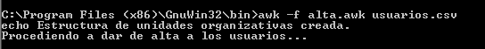

- Módulo: Administración de Sistemas Operativos
- Título del trabajo Generar Usuarios.
- Componentes del grupo: Isabel Quintero Sánchez.
- Curso Académico: 2014/2015
- Fecha de entrega: 2 de Marzo de 2015
Para esta parte de la práctica utilizaremos una MV Windows 2008 Server, donde realizaremos paso a paso lo que nos indica el enunciado.
En primer lugar, vamos al enlace que nos proporciona el documento del profesor para descargarnos GAWK y procdemos a su instalación.
Una vez instalado, nos asegurarnos de que podemos ejecutarlo desde cualquier directorio del sistema de ficheros de Windows, para ello debemos establecer la variable de entorno %PATH% siguiendo la ruta Inicio > Equipo > Propiedades:
XCACLS.vbs es un script que nos permite, ver, modificar y eliminar permisos NTFS en Windows. Lo primero que debemos hacer es descargar el script desde el enlace que nos proporciona el documento de el profesor. Una vez descargado el programa, debemos ejecutar el instalador y extraer todos los archivos en la carpeta donde tenemos instalado el S.O, en este caso C:\Windows..
Luego, buscamos la function "IsOsSupported()" y la editamos para que soporte la versión 6.0 (Windows Server2008) y 6.1 (Windows Server 2008 R2)
Luego cambiaremos el motor de secuencias de comandos predeterminado, de WSCRIPT a CSCRIPT, esto se debe a que XCACLS.vbs trabaja mejor con cscript. Así que escribiremos el siguiente comando en "Ejecutar...": cscript.exe /h:cscript.
Para utilizar el script, debemos abrir una nueva consola de línea de comandos e ir hasta el directorio "C:\WINDOWS" y ejecutar cscript.exe xcacls.vbs.
Abriremos el bloc de notas o cualquier otro editor de texto y copiaremos todos los datos que nos proporciona el documento de la práctica, dicho ducmento lo guardaremos como "usuarios.csv".
Volvemos a abrir el bloc de notas u otro editor de texto y copiamos lo que nos proporciona el documento de la práctica, en este caso lo llamaremos "alta.awk".
Debemos instalar la función de Active Directory y crear un nuevo bosque.
Para que no nos de error, también debemos crear la Unidad Organizativa de "Formación profesional" manualmente.
Para acabar, debemos generar el fichero "crear.bat" con los dos ficheros creados anteriormente (alta.awk y usuarios.csv). Para ello, debemos ir a la ruta donde hemos guardado los ficheros y que hemos puesto en el Path "C:\ProgramFiles(86)\GnuWin32\bin" y ejecutar el siguiente comando: awk -f alta.aek usuarios.csv.
Observamos que el fichero "crear.bat" se ha creado correctamenta y procedemos a su ejecución.